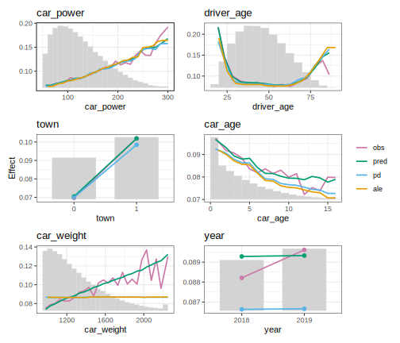
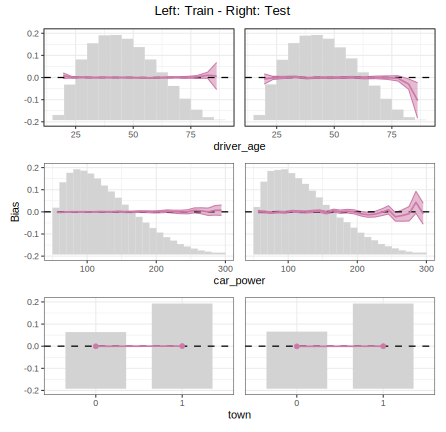
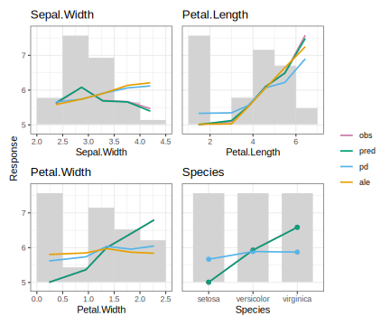
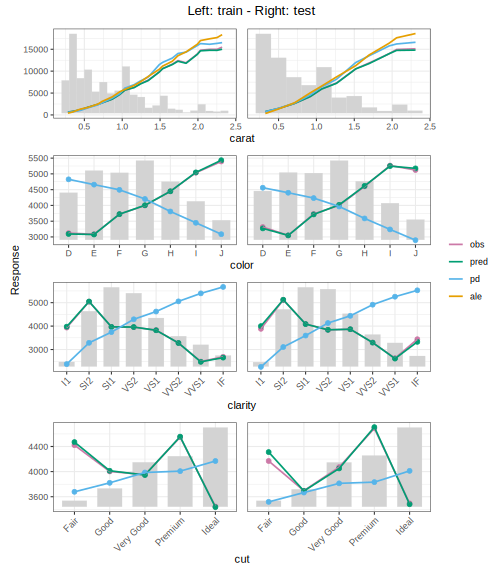
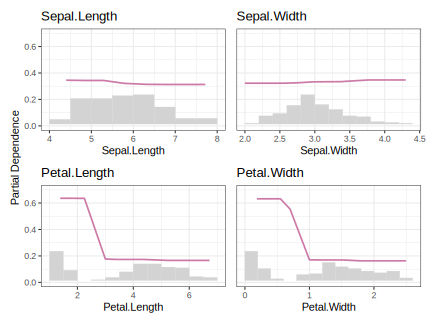

{effectplots} is an R package for calculating and plotting feature effects of any model. It is very fast thanks to {collapse}.
The main function feature_effects() crunches these statistics per feature X over values/bins:
- Average observed y values: Descriptive associations between response y and features.
- Average predictions: Combined effect of X and other features (M Plots, Apley [1]).
- Partial dependence (Friedman [2]): How does the average prediction react on X, keeping other features fixed.
- Accumulated local effects (Apley [1]): Alternative to partial dependence.
Furthermore, it calculates counts, weight sums, average residuals, and standard deviations of observed y and residuals. All statistics respect optional case weights.
We highly recommend Christoph Molnar’s book [3] for more info on feature effects.
It takes 1 second on a normal laptop to get all statistics for 10 features on 10 Mio rows (+ prediction time).
Workflow
-
Crunch values via
feature_effects()or the little helpersaverage_observed(),partial_dependence()etc. -
Update the results with
update(): Combine rare levels of categorical features, sort results by importance, turn values of discrete features to factor etc. -
Plot the results with
plot(): Choose between ggplot2/patchwork and plotly.
Installation
You can install the development version of {effectplots} from GitHub with:
# install.packages("pak")
pak::pak("mayer79/effectplots", dependencies = TRUE)Usage
We use a 1 Mio row dataset on Motor TPL insurance. The aim is to model claim frequency. Before modeling, we want to study the association between features and response.
library(effectplots)
library(OpenML)
library(lightgbm)
set.seed(1)
df <- getOMLDataSet(data.id = 45106L)$data
xvars <- c("year", "town", "driver_age", "car_weight", "car_power", "car_age")
# 0.1s on laptop
average_observed(df[xvars], y = df$claim_nb) |>
update(to_factor = TRUE) |> # turn discrete numerics to factors
plot(share_y = "all")
A shared y axis helps to compare the strength of the association across features.
Fit model
Next, let’s fit a boosted trees model.
ix <- sample(nrow(df), 0.8 * nrow(df))
train <- df[ix, ]
test <- df[-ix, ]
X_train <- data.matrix(train[xvars])
X_test <- data.matrix(test[xvars])
# Training, using slightly optimized parameters found via cross-validation
params <- list(
learning_rate = 0.05,
objective = "poisson",
num_leaves = 7,
min_data_in_leaf = 50,
min_sum_hessian_in_leaf = 0.001,
colsample_bynode = 0.8,
bagging_fraction = 0.8,
lambda_l1 = 3,
lambda_l2 = 5,
num_threads = 7
)
fit <- lgb.train(
params = params,
data = lgb.Dataset(X_train, label = train$claim_nb),
nrounds = 300
)Inspect model
Let’s crunch all statistics on the test data. Sorting is done by weighted variance of partial dependence, a main-effect importance measure related to [4].
The average predictions closely follow the average observed, i.e., the model seems to do a good job. Comparing partial dependence/ALE with average predicted gives insights on whether an effect mainly comes from the feature on the x axis or from other, correlated, features.
# 0.1s + 0.15s prediction time
feature_effects(fit, v = xvars, data = X_test, y = test$claim_nb) |>
update(sort_by = "pd") |>
plot()
Flexibility
What about combining training and test results? Or comparing different models or subgroups? No problem:
m_train <- feature_effects(fit, v = xvars, data = X_train, y = train$claim_nb)
m_test <- feature_effects(fit, v = xvars, data = X_test, y = test$claim_nb)
# Pick top 3 based on train
m_train <- m_train |>
update(sort_by = "pd") |>
head(3)
m_test <- m_test[names(m_train)]
# Concatenate train and test results and plot them
c(m_train, m_test) |>
plot(
share_y = "rows",
ncol = 2,
byrow = FALSE,
stats = c("y_mean", "pred_mean"),
subplot_titles = FALSE,
# plotly = TRUE,
title = "Left: Train - Right: Test",
)
To look closer at bias, let’s select the statistic “resid_mean” along with pointwise 95% confidence intervals for the true conditional bias.
c(m_train, m_test) |>
update(drop_below_n = 50) |>
plot(
ylim = c(-0.07, 0.08),
ncol = 2,
byrow = FALSE,
stats = "resid_mean",
subplot_titles = FALSE,
title = "Left: Train - Right: Test",
# plotly = TRUE,
interval = "ci"
)
More examples
Most models work out-of-the box, including DALEX explainers and Tidymodels models. If not, a tailored prediction function can be specified.
DALEX
library(effectplots)
library(DALEX)
library(ranger)
set.seed(1)
fit <- ranger(Sepal.Length ~ ., data = iris)
ex <- DALEX::explain(fit, data = iris[, -1], y = iris[, 1])
feature_effects(ex, breaks = 5) |>
plot(share_y = "all")
Tidymodels
Note that ALE plots are only available for continuous variables.
library(effectplots)
library(tidymodels)
set.seed(1)
xvars <- c("carat", "color", "clarity", "cut")
split <- initial_split(diamonds)
train <- training(split)
test <- testing(split)
dia_recipe <- train |>
recipe(reformulate(xvars, "price"))
mod <- rand_forest(trees = 100) |>
set_engine("ranger") |>
set_mode("regression")
dia_wf <- workflow() |>
add_recipe(dia_recipe) |>
add_model(mod)
fit <- dia_wf |>
fit(train)
M_train <- feature_effects(fit, v = xvars, data = train, y = "price")
M_test <- feature_effects(fit, v = xvars, data = test, y = "price")
plot(
M_train + M_test,
byrow = FALSE,
ncol = 2,
share_y = "rows",
rotate_x = rep(45 * xvars %in% c("clarity", "cut"), each = 2),
subplot_titles = FALSE,
# plotly = TRUE,
title = "Left: train - Right: test"
)
Probabilistic classification
We focus on a single class.
library(effectplots)
library(ranger)
set.seed(1)
fit <- ranger(Species ~ ., data = iris, probability = TRUE)
M <- partial_dependence(
fit,
v = colnames(iris[1:4]),
data = iris,
which_pred = 1 # "setosa" is the first class
)
plot(M, bar_height = 0.33, ylim = c(0, 0.7))
References
- Apley, Daniel W., and Jingyu Zhu. 2020. Visualizing the Effects of Predictor Variables in Black Box Supervised Learning Models. Journal of the Royal Statistical Society Series B: Statistical Methodology, 82 (4): 1059–1086. doi:10.1111/rssb.12377.
- Friedman, Jerome H. 2001. Greedy Function Approximation: A Gradient Boosting Machine. Annals of Statistics 29 (5): 1189–1232. doi:10.1214/aos/1013203451.
- Molnar, Christoph. 2019. Interpretable Machine Learning: A Guide for Making Black Box Models Explainable. https://christophm.github.io/interpretable-ml-book/.
- Greenwell, Brandon M., Bradley C. Boehmke, and Andrew J. McCarthy. 2018. A Simple and Effective Model-Based Variable Importance Measure. arXiv preprint. https://arxiv.org/abs/1805.04755.